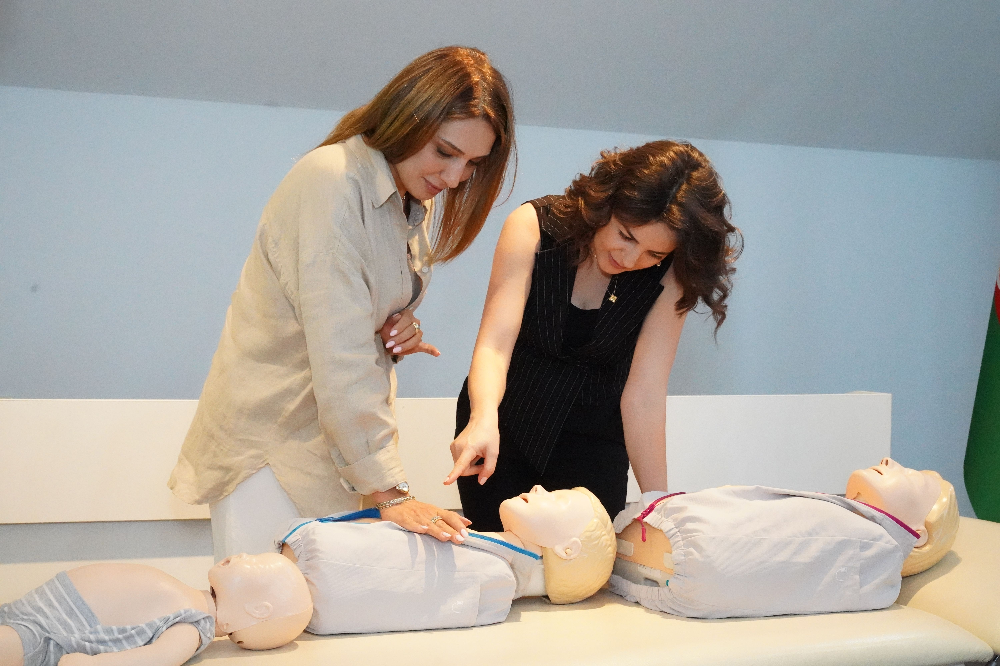
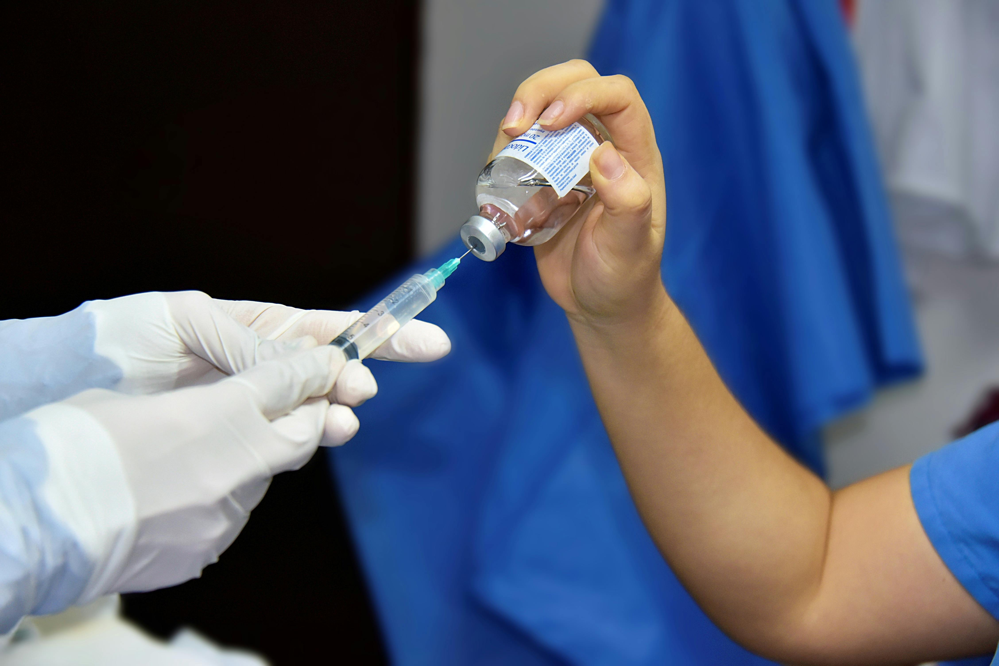
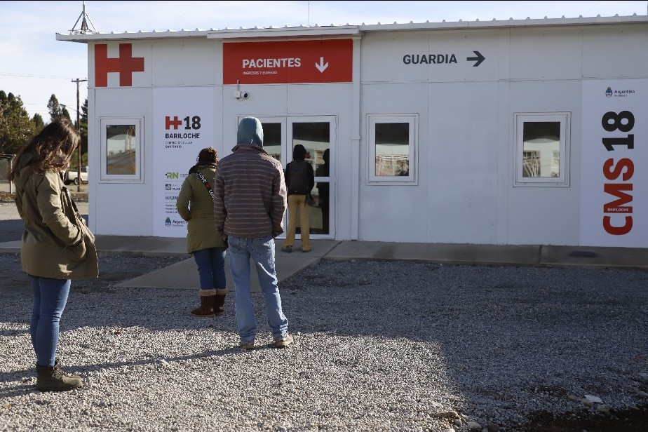

Formación de profesionales de la salud
PROYECTOS ACTIVOS: 4Investiga formación y prácticas en ciencias de la salud.

Investiga formación y prácticas en ciencias de la salud.

Investiga epidemiología, prevención y control de zoonosis en nuestra región.

Analiza atención, cuidado y prevención de enfermedades prevalentes.

Estudia modelos de gestión, participación y evidencia para políticas públicas.

Analiza mecanismos biológicos implicados en salud y enfermedades humanas.

Laboratorio de Evaluación de Tecnologías e Investigación Sanitaria
Ver LETIS →Las investigaciones del centro se desarrollan desde una perspectiva interdisciplinaria, integrando aportes de distintas áreas del conocimiento. Se prioriza el trabajo colaborativo, el análisis riguroso y la generación de resultados aplicables a necesidades reales.